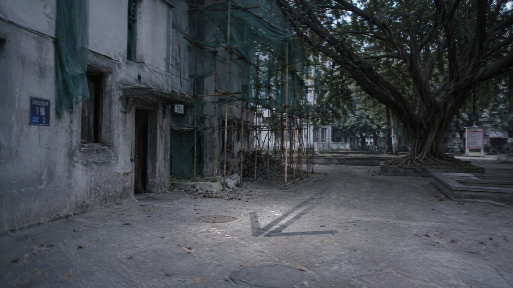

我查了学校的招生记录。2024年，学校没有招生。因为施工。
但我记得入学。我记得开学典礼。我记得我的宿舍在三楼，窗户正对着中庭的榕树。
可是，这些记忆是真的吗？
📷 [照片] 施工中的1号楼 · 拍摄于2025-07-19 03:17
（脚手架阴影每天下午都会指向同一个位置）
（脚手架阴影每天下午都会指向同一个位置）

Jungeun告诉过我，我们不存在于任何一届。我们是“夹缝”里的人。
我不理解这句话。但最近，我发现自己的记忆在消失。昨天记得的事，今天就想不起来了。不是忘了——是被拿走了。
📝 [日记残页]
“2025年7月18日。我写下这句话的时候，已经不确定自己是否写过。同样的字迹，但不是我写的。”
“2025年7月18日。我写下这句话的时候，已经不确定自己是否写过。同样的字迹，但不是我写的。”
脚手架阴影每天下午三点十七分指向榕树正下方。那里有什么？
📌 补充信息：
我数过。从榕树到阴影指向的点，需要走12步。下面是水泥地面，但踩上去的声音是空的。
下面是B2。